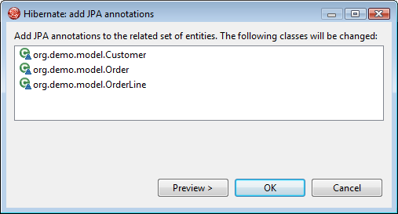
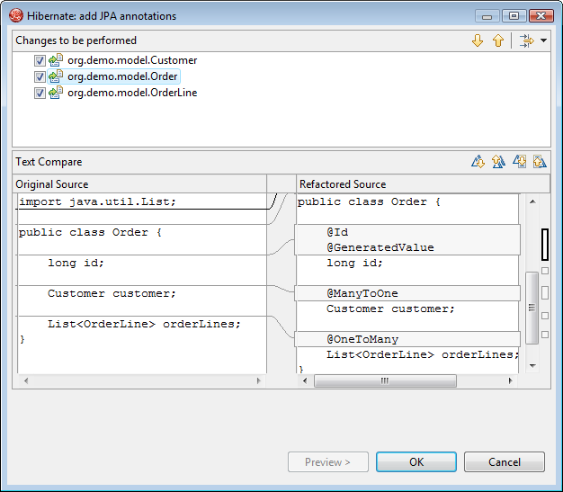

|
We added a "Generate JPA/Hibernate Annotations" entry in the
Source menu of java elements (classes, packages, source
directories etc.). This menu will analyze the source code and do a
best-guess on how to enable persistence for you model.

Here we have chosen to Generate JPA/Hibernate Annotations on single class and the list of classes that will touched to make this model persistent is shown.

Users can press Preview... to see which changes will be done. Notice that bi-directional assocations is mapped automatically.
|